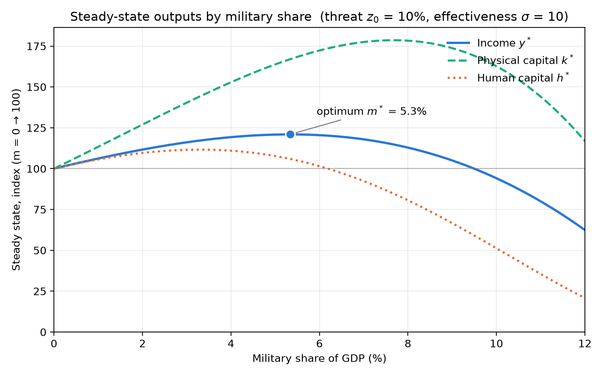

- The cost of one modern heavy bomber is this: a modern brick school in more than 30 cities. It is two electric power plants, each serving a town of 60,000 population. It is two fine, fully equipped hospitals. It is some fifty miles of concrete pavement.
Dwight Eisenhower: „Chance for Peace“ 1953
Military spending involves tradeoffs
there is no such thing as free lunch
opportunity cost
be it the „guns or butter“ debate
@XX
or even earlier: swords to ploughshares bible
notion of peace dividend
supplanted by: NATO new 5% target
in time of limited fiscal budget = repriorities
=> tradeoff between military spending and other budget factors
Dwith D. Eisenhower in famous Chance for Peace speech
one modern heavy bomber = 30 schools, electric power plants, pavement
often times: productive investments into education
while in the long-term: human capital beneficial for social welfare
in the shrot term military logic:
no benefit
physical capital and military capital = priority
protection
some Lit (XX)
miliatry resources
deterrence
taxation budget
This paper
model the decision making process
between military spending and HC
in a Solow model
answer to the question: why do policymakers invest in the military?
Theoretical Framework¶
Basic MRW
Physical Capital
Human Capital
Labor
Technology left outof it, for simplification
Government Sector
takes in fixed tax amount t from economy \(tY => (1-t)s\) etc
either spent on military or education \(t = m + e\), and \(e,m < t\)
Spending on military
protection role:
physical capital (destruction in case of war)
human capital (conscription = not going to school)
with no military, with a war, there would be higher loss, with a higher military share => lower
takes away real resources from the economy
We add the term to the laws of motion for per capita physical $\( \dot{k} = \overbrace{s(1-t)y}^{\text{investment}} - \overbrace{(n+d)k}^{\text{depreciation}} - \overbrace{z(m)k}^{\text{war risk}} \)\( equivalent for human capital \)\( \dot{h} = \overbrace{(t-m)y}^{\text{education spending}} - (n+d)h-z(m)h \)$ both now feature a function that models the war risk
negatively impacts the buildup of both capital stocks
requirments for the function
higher m => lower value of war risk \(z'(m) < 0\)
but with diminishing returns of miliatry spending
intuition: the marginal value of 1000th tank is lower than of the first
\(z''(m) > 0\)
\(z(0)\) = should be the losses due to war in case of no military spending
represent the baseline scenario of what would happen
functional form: very simple e function that fulfills the requirments $\( z(m) = z_0 e^{-\sigma m} \)$
\(z_0\) = war loss without any military
factors influecing this:
perceived chance of war (\(\lambda\))
expected destruction in case of war (\(u\))
example: 25% chance of war, 40% destruction
=> z0 = 10%
not analyzed deeper, subsumed under this
\(e^{-\sigma m}\) = decreasing effect of higher m
can be interpreted in two different ways, either
deterrence effect = bigger military = lower risk of being attacked
protection effect = bigger military = can be better protect if war happens (e.g air defense systems)
sigma = efficiency of military spending
how does increase in military spending reduce risk
e.g a nuclear weapon probably has a high deterrence factor
or a very patriot missile air defense system (PATRIOT) = very good protection
or in more current terms: highly efficient drones might increase sigma
very money efficient way
while other types might be more wasteful
only one possible functional form
but for this modelling exercise = one of the simple versions
models policy choices and expectations
Equilibrium¶
Where does the equilibrium of this model land? What are the steady state values k* and h*
set both equal to zero
in following math for simplification: D(m) = \((n+d)+z(m)\)
all factors negatively imacting the capital stocks
Solving physical capital $\( \dot{k} = s(1-t)y - D(m)k \\ k^* = \frac{s(1-t)}{D(m)}y \)\( identical approach for human capital \)\( h^* = \frac{(t-m)}{D(m)}y \)\( now: the per-capita function \)\( y = \frac{Y}{L} = \frac{K^\alpha H^\beta L^{1-\alpha-\beta}}{L^\alpha L^\beta L^{1-\alpha-\beta}} = k^\alpha h^\beta \\ \)\( Substituting eq 5 and 6 \)\( y^* = \bigg[\frac{s(1-t)}{D(m)}y^* \bigg]^\alpha \bigg[\frac{(t-m)}{D(m)}y^* \bigg]^\beta \\ \)\( simplifies to \)\( y^* = \{[s(1-t)]^\alpha [t-m]^\beta D(m)^{-(\alpha+\beta)} \}^{1/1-\alpha-\beta} \)$
Now: maximize this over the variable m we can influence \(\frac{dy^*}{dm}\)
what is the maximum y we can reach
maximize per capital consumption \(c = (1-t)(1-s)y\)
t and s are fixed, not relevant for the maximization
in the function: only take the parts of the bracket dependent on m
other parts = strictly positive, do not influence the maximum
Maximum \(f'(m)\), with product rule $\( \overbrace{-\beta[t-m]^{\beta-1}}^{f'} \cdot \overbrace{D(m)^{-(a+b)}}^{g} + \overbrace{[t-m]^{\beta}}^{f} \cdot \overbrace{-(\alpha+\beta) D(m)^{-(a+b)-1}D'}^{g'} \\ \)\( Set \)f‘(m) = 0\( \)\( -(\alpha+\beta)D(m)^{-(\alpha+\beta)-1}D'(m)(t-m)^{\beta} = \beta[t-m]^{\beta-1}D(m)^{-(\alpha+b)} \)\( Divide by \)(t-m)^{\beta-1} D^{-(\alpha+\beta)-1}\( \)\( -(\alpha+\beta)(t-m)D'(m)= \beta D(m) \)\( Rearrange \)\( \frac{-(\alpha+\beta)D'(m)}{D(m)} = \frac{\beta}{(t-m)} \)\( And then substituting \)D‘(m) = -\sigma z(m)\( and \)D(m)\(, gives the final \)$ \overbrace{ \frac{(\alpha+\beta)\sigma z(m)}{n+d+z(m)} }^{\text{Marginal Benefit}}¶
\overbrace{\frac{\beta}{(t-m)}}^{\text{Marginal Cost}} $$ with a very intuitive explanation
LHS = Marginal Benefit of higher military spending
both capital stocks are protected
dependent on deterrence factor sigma
higher depreciation and war losses reduce the benefit
RHS = Marginal cost of higher miliatry spending
human capital bears the brunt of this
higher importance of human capital in economy
higher MC
and the share spent on education
if low, spending on teachers is very useful
Military spending is rational if MB > MC
condition for interior optimoum: MB(0) > MC(0)
evalute, treshold value z_0
with \(z(0) = z_0\), in eq 15 $$ \frac{(\alpha+\beta)\sigma z_0}{n+d+z_0}¶
\frac{\beta}{t} $\( Rearringing \)\( (\alpha+\beta)\,\sigma\, t\, z_0 > \beta\,(n+d) + \beta\, z_0 \\ z_0\,\bigl[(\alpha+\beta)\,\sigma\, t - \beta\bigr] > \beta\,(n+d) \)\( Then: \)\( z_0^{crit} = \frac{\beta\,(n+d)}{(\alpha+\beta)\,\sigma\, t - \beta} \)$ War risk has to be above a certain treshold of war risk to be worth it
below: military spending is always detrimental
A Numerical Example¶
To illustrate the model, I now continue with a numerical example
add common factors
\(\alpha = \beta = 1/3\)
\(n+d = 0.05\)
a value for fixed tax amount t = 0.146
world average tax revenue (@XX) World Bank
crude simplification, assumption that it is only spent on m and e
Setting a sigma¶
18: for z_0 to be between 0 and 1, we need a treshold sigma \(\sigma > 3.42\).
simple version: would be to take sigma = 1: will always give a z_0 that is not feasible
already one interpretation: simple model never gives any justification for military spending
for simplicity, I assume sigma = 10, illustrate the workings of the model
One % increase in m = lowers war risk by about 10% (quite high assumption)
Footnote
Elasticity of z to m $\( \frac{z(m+\Delta m)}{z(m)} = \frac{z_0\,e^{-\sigma (m+\Delta m)}}{z_0\,e^{-\sigma m}} = e^{-\sigma\,\Delta m} \\ 1 - \frac{z(m+\Delta m)}{z(m)} = 1 - e^{-\sigma\,\Delta m} \)\( with sigma=10 and \)\Delta m = 0.01 \approx 9.5%$
Solving numerically¶
Solving with these values (Appendix Python Script) yields these values for different z0
War risk z0 (%) |
Optimal military share m* (% GDP) |
Education spending (% GDP) |
Income gain vs m = 0 (%) |
|---|---|---|---|
0.0 |
0.00 |
14.68 |
0.0 |
5.0 |
2.96 |
11.72 |
5.0 |
10.0 |
5.39 |
9.29 |
21.3 |
20.0 |
7.13 |
7.55 |
46.7 |
As expected:
higher war risk = shifting resources from education to military
income gain over zero military spending rises
5.3% = similar to NATO target of 5% military spending
driven by a very high z0
10% war risk
25% chance of war in year, 40% destruction
for comparison: World Bank estimate of ukraine destruction of physicalcapital (Link)
Fall 2022, 6 months after invasion
estimate 10% of capital stock to possible already have been destroyed
frontline states, but even then quite high
A graphic example¶
plot this situation (Code in Appendix):
military share as dependent variable
steady state given this m
At toptimum 5,3%:
the 21.3% income gain over m=0
human capital = already declining
as military spending recudes education spending
the protection effort is there for lower ms, maximum reached earlier
differnt for physical capital
maximum at much higher m
not impacted as much by higher military spending, only declines later
crowding out effect = much later

Discussion¶
Limitations¶
Only flow variable m
military spending = could be thought of as building up a stock
just including the flow variable = transitions are not modellable
=> does not matter for the steady state analysis
as stock will be proportional to the flow
and complicates the model, new law of motion
Disappearance of military spending
spillover effects of military spending
and income back to population, eg in the form of soldier pay
National accounts:
government consumption
pay makes up only small share of military expenditure
most into gear and machines
without any productive use in the real economy
tanks cant make your field
model could be extended
a factor of military spending flowing back into consumption
e.g with w = share of spending that flows back
would change the magnitude of the equations, but not the direction
And as any neoclassical model
Assumptions of Rationality
that m is a function of measurable inputs
and does not follow any other considerations (military industrial complex)
Politics¶
This model: can explain why there are political differences about military spending
factions opposed to higher military spending = perceive war risk to be lower
others = in favor of higher military spending
the years of the peace dividend after Cold war
common politial understanding that risk is quite low
allows lower military spending m
Investments into modern war equipment
raise deterrence factor sigma = raises z
nuclear bomb = \(\sigma \to \infin\)
deterrence of it is very high, as no one would ever dare to attack
INterest groups that rely on physical capital
greater incentive to lobby for higher military spending
as their optimal m is higher than whole society
Conclusion¶
This approach: looked at how to model a trade off with education spending
in a SOlow MRW model
dependent on war risk, deterrence factor, and tax base variables
something we see in the current debate in european countries around the NATO target of 5% of GDP spent on military
Optimal militry spending:
balances marginal cost in form of reduced human capital investment
with marginal benefit of the protection of both stocks of capital
Numverical Results show that a value of military target of 5.3%, close to NATO target
depends on a high risk of war
and a high deterrence factor of the militrary
at least in this simplified model
The model
can explain why different countries invest a different share of their GDP in military
also the investment in different types of weaponry
elaborate reasons for different political opinions on military spending
Always shows: tradeoffs are real. As demonstrated by a second fragment from the speech quoted above:
Every gun that is made, every warship launched, every rocket fired signifies, in the final sense, a theft from those who hunger and are not fed, those who are cold and are not clothed.
~ Dwight Eisenhower: „Chance for Peace“ 1953